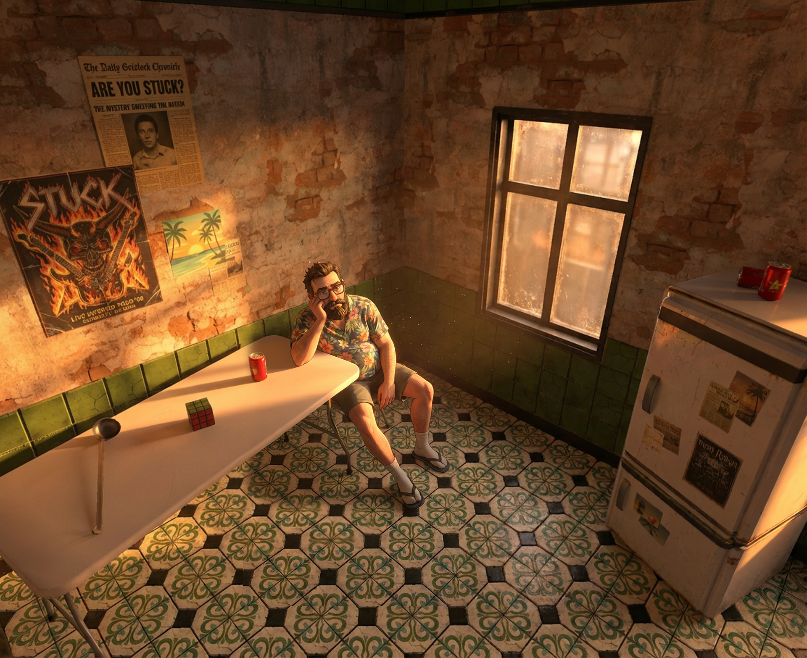
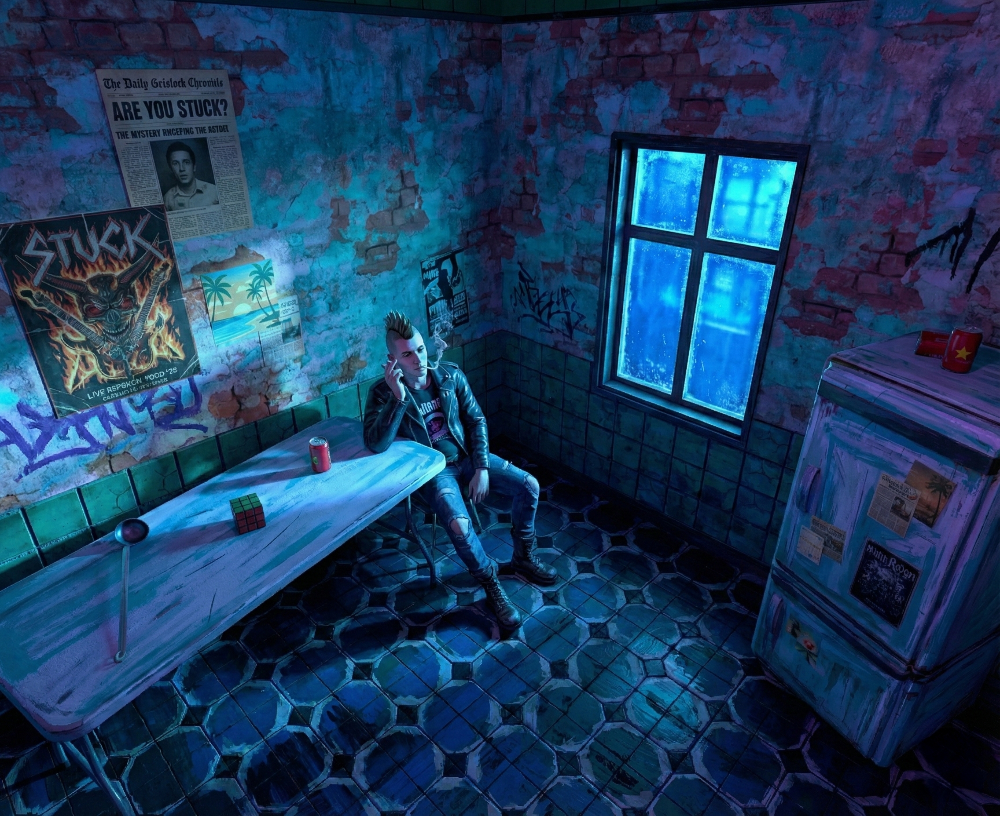
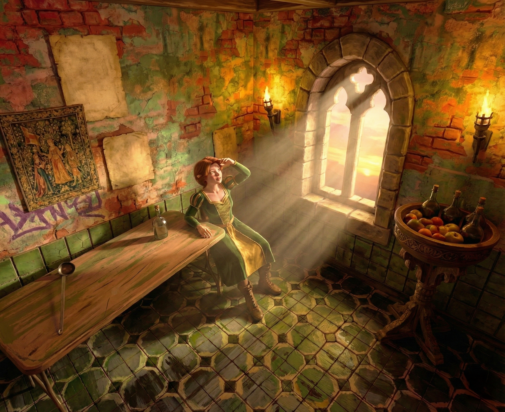

La vida atrapada: PRESENTACIÓ D'UN PETIT PERSONATGE VIRTUAL
Mini Vita és un personatge interactiu amb memòria vectoritzada, completament local i optimitzat per funcionar en un ordinador domèstic modern.
Swipe



Després de complir 35 anys, Tom es desperta en una capsa blanca, una habitació tancada, on només
hi ha una veu: La teva.
Tom recorda tota la seva vida i vol escapar, tornar amb la seva família, però no pot.
La seva existència, les seves memòries i emocions, només existeixen dins l’ordinador.
Fora de la capsa, Tom no és ningú, no existeix, no pot existir. Però ell creu que sí, i farà
tot el possible per sortir.
Pobre Tom.
Mini Vita extreu la pintura i l’animació a una nova dimensió: permet als artistes crear no només
el físic dels personatges,
sinó també la seva ment, records i emocions.
Els personatges poden recordar la seva mare, la casa on van néixer i els seus primers amors,
moments que mai han existit.
L’ no és només observar, sinó sentir la desesperació del petit home atrapat, i explorar
noves fronteres entre la tecnologia i l'art.
Mini Vita proposa una nova manera d’entendre la narrativa digital, més íntima, emocional i
interactiva.
Funcionament local a temps real, moviment poc estable, memòria no implementada, veu poc
precisa.
Memòria implementada, veu més precisa, moviment estable. Sense interacció amb l'entorn 3D.
La versio 03 de Mini Vita esta en desenvolupament.
Al no tractar-se d'un video, sinó d'un programa interactiu, s'utilitzaria un methode no current d'exhibicio. Amb un ordinador executant el programa en temps real, perque els usuaris puguin interactuar amb el personatge.
Personatges amb identitat única, records, memòries i aprenentatge continu.
Personatges amb raonament complex i adaptació contextual en temps real per a entorns
dinàmics.
Moviment fluid i realista, amb animacions facials i corporals complexes enquadrades amb la
veu i l'espai.
Context · Associació · Intenció
Records · Emocions · Experiències
(veu / llenguatge)
(moviment)
Tot consisteix a trobar una manera d’expressar l’ésser humà en totes les seves qualitats.
MoMask: Generative Masked Modeling of 3D Human Motions, 2023
Download PaperMaskControl: Spatio-Temporal Control for Masked Motion Synthesis, 2025.
Access DocumentPer més informació, podeu contactar a través del següent correu electrònic: